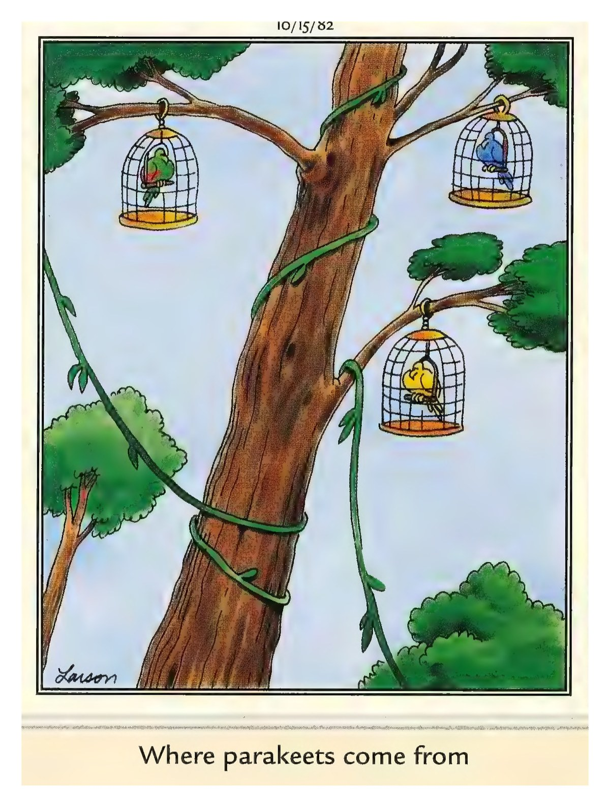

Your Daily Computer Brief
🔴 ALERT
Your phone rings. The caller says they're from Microsoft Support (or Windows, or Apple). They claim your computer has a virus, or your license expired, or hackers are stealing your files right now. They sound professional. They may even know your name. Here's the truth: Microsoft, Apple, and Google never call you out of the blue. Never. If you see a phone number in a popup or get an unsolicited "support" call, it's a scam. Every single time. What to do: hang up. Don't press any buttons. Don't give them remote access to your computer. Don't read them numbers from your screen. Just hang up. If you're worried about your computer, call a local shop you trust — or bring it in. Source: FTC.gov Consumer Alerts — October 2026
Today in Tech
- Microsoft's October Patch Tuesday fixed over 1,400 security holes across Windows and Office. It's the last monthly update for Windows 11 versions 24H2, 25H2, and 26H2 — those editions lose security support after this. Check Settings > Windows Update. (Source: Microsoft — October 2026)
- CISA added four actively exploited vulnerabilities to its Known Exploited Vulnerabilities catalog on October 14. Attackers are using these right now. If you manage any servers or business software, review the list at cisa.gov/known-exploited-vulnerabilities-catalog. (Source: CISA — October 2026)
- Electric cooperatives are laying thousands of miles of fiber across North Florida using federal BEAD funding. Gigabit speeds are reaching rural areas that previously had only satellite or DSL. Check broadbandmap.fcc.gov to see if fiber has arrived at your address. (Source: North Florida Economic Development Partnership — October 2026)
Daily Tip
Open your web browser and go to haveibeenpwned.com. Type in your email address and click the button. In seconds you'll see every known breach that included your information. If any show up, change those passwords today — and use a different one for each site.
😄 COMEDY BREAK
